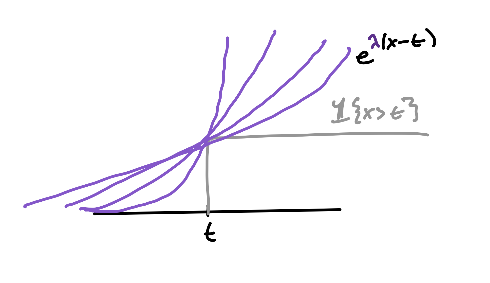
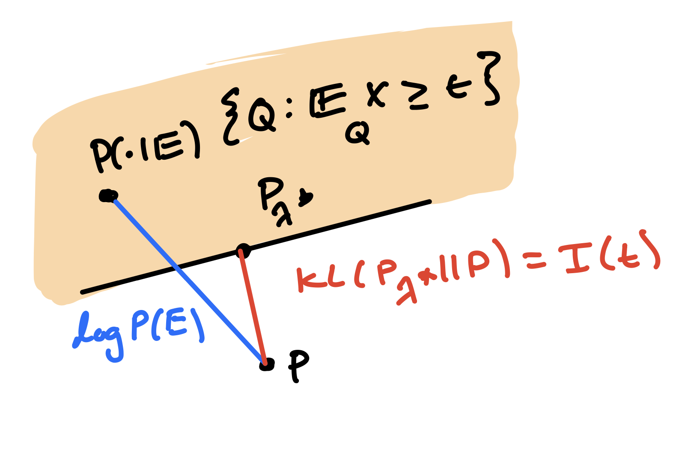
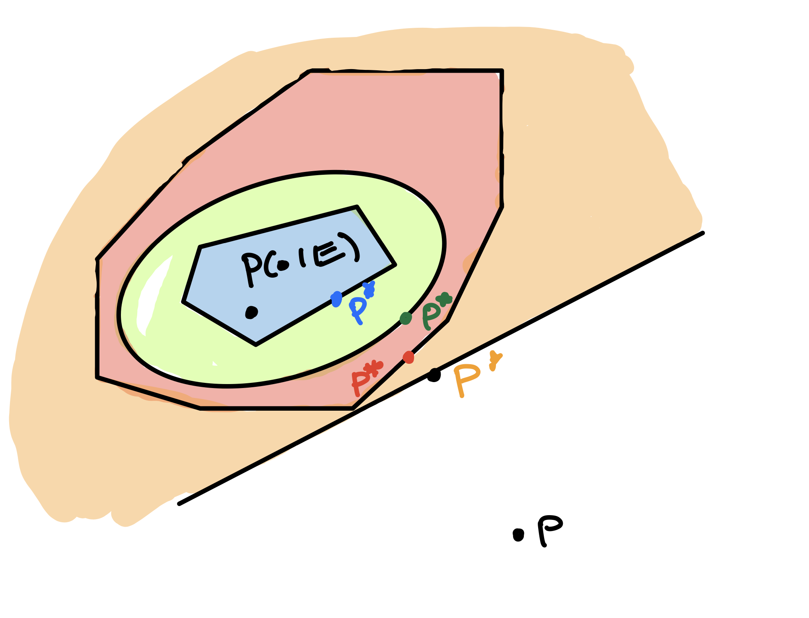

The Geometry of Prediction, Part I
Part 1
I recently read this tweet by my friend, Ahmad Beirami. My approach to concentration inequalities has been quite utilitarian, and Ahmad’s tweet confirmed to me that I am missing out on some deep geometric intuition in statistics. This has led me to revisit some primitives of statistics with which I have long had merely a pragmatic alliance – among them the cumulant generating function, the Chernoff bound, and exponential families – with the hope of forging a firmer friendship.
This note will be a preposterously overlong account of the Chernoff bound – one which will hopefully make clear what precisely is happening when we exponentiate before applying Markov’s inequality. There’s a cute geometric picture that, while standard, is often not presented in basic courses.
Long term, I want to explain why the geometry that we discuss here bears on estimation theory and online algortihms. The second case is especially rremarkable, as it shows that we can use statistical tools in entirely adversarial scenarios.
I don’t wish to get too bogged down in technical details. All the (in)equalities that follow hold under the mild assumption that they hold.
Exponential families
Let’s begin with a quick recap of exponential families. These are parametric statistical models that are computationally and theoretically favorable, for geometric reasons that will become clear in a moment.
In its natural form, a parametric density \(p_\eta\) is an exponential family if it has the form \[p_\eta(x) = p(x) e^{\langle \eta, T(x)\rangle - A(\eta)}\]
Exponential families have many nice properties, including the following
- 1 \(\E_{p_\eta} [T(x)] = \nabla A |_\eta\)
- 2 \(\Cov_\eta(T(x)) = \nabla^2 A |_\eta\)
- 3 \(\E_\eta[e^{\lambda T(x)}] = A(\eta + \lambda) - A(\eta)\)
- 4 Given data \(x_1, ... x_n \sim p_\eta\), the MLE for \(\eta\), \(\hat{\eta}\) is satisfies \(\nabla_\eta A(\hat\eta) = \sum_i T(x_i)/n\)
- 5 \(KL(p_\eta || p_\lambda) = D_A(\lambda || \eta)\) where \(D_A\) is the Bregman divergence under \(A\).
These plain lemmas, which can be verified by simple computation, breed copiously amongst themselves to produce theorems that reveal the geometry that underlies so much of classical statistics. We’ll scrutinize their progeny later.
For now, however, let us simply notice that, for any base (univariate) density \(p\), we can define an exponential family by multiplying it by \(e^{\lambda x}\) and normalizing appropriately: \[p_\lambda(x) = e^{\lambda x}p(x)/\E_p[e^{\lambda x}] = e^{\lambda x - \log \E [e^{\lambda X}]}p(x)\] so that \(A(\lambda) = \psi(\lambda) = \log \E [e^{\lambda X}]\) and \(\eta = \lambda\). Thus, whenever we linearly tilt a density, the C.G.F. enters the stage merely as a normalizing constant. However, in its capacity as the log-partition function of the so-called Esscher transform , the C.G.F. acquires an interesting role in defining the geometry of \(\lambda\)-space
If \(P\) is a measure (as opposed to a density), we can define the tilted distribution through the Radon-Nikodym derivative \(\frac{dP_\lambda}{dP} = e^{\lambda x - \psi(\lambda)}\). In this note, one can rest assured that essentially nothing is lost by considering this to be a somewhat ostentatious rewrite of the definitional statement \(p_\lambda(x)/p(x) = e^{\lambda x - \psi(\lambda)}\) .
Remark: We’ve already arrived at an interesting interpretation of the CGF of \(P\). It’s the convex potential whose Bregman divergence defines the KL divergence between linear tilts of \(P\). Why are linear tilts interesting? Read on!
The Chernoff Bound
Here is how the Chernoff argument typically runs in a Master’s class. We have an arbitrary random variable, \(X \sim P\), and we wish to bound its tail probability, \[\Pr[X \geq t] \ ; \mathrm{where} \ t > \E_P[X]\]
We begin by mercilessly mocking the feeble bounds produced by Markov and Chebyshev – they retire, dejected. The professor now pulls the following rabbit out of his or her hat: \[\mathrm{Pr}[X \geq t] = \inf_\lambda \mathrm{Pr}[e^{\lambda X} \geq e^{\lambda t}] \leq \inf_\lambda e^{- \lambda t + \log \E[e^{\lambda X}]]} = e^{-I(t)} \]
and enigmatically terms \(I\) the “rate function”. Together, the class cranks out pages of calculation to get supertight binomial tail bounds, or possibly characterize subgaussian or subexponential random variables. Meanwhile, the rabbit scampers away into a nearby shrub, never to reappear.
Why did exponentiating magically make Markov’s inequality good again? One may dimly perceive that exponentiation pushes us towards the case of two point masses, where Markov is tight. But personally, if I can’t draw it, I don’t understand it.
In order to improve our understanding, we’ll prove the Chernoff bound three different ways, with a special focus on understanding where the looseness in the inequality comes from.
Proof 2: Circumscribe
As a starting point towards making the Chernoff derivation look less miraculous, here’s one rewrite of the standard proof, using the numerical inequality \(1\{x \geq t\} \leq e^{\lambda(x - t)}\) for any \(\lambda > 0\):
\[\Pr[X \geq t] = \E[1\{X \geq t\}] \] \[= \E[\inf_\lambda e^{\lambda (X - t)}] \] \[\leq \inf_\lambda \E[e^{\lambda (X - t)}] = \inf_\lambda e^{\psi(\lambda) - \lambda t} = e^{-I(t)}\]
So exponentiating and applying Markov’s inequality is the same as inscribing the tail-indicators induced by \(X\) in an exponential, and then choosing its rate (\(\lambda\)) to optimize this surrogate on average over \(X\). In this chain, the slack is in moving the infinum out of the expectation. The slack of the Chernoff bound is exactly the \(L^1(P)\)-norm of the slack in the numerical inequality.

Incidentally, what we have just seen is that we can recreate \(\Pr[X \geq t]\) by taking the lower \(\lambda\)-envelope of the \(t\)-curves \(\psi(\lambda) - \lambda t\) as we sweep \(\lambda \in [0, \infty]\).
Proof 3: Tilt
Let’s go again. This time, we will write the tail as an importance-weighted expectation under the distribution \(P_\lambda\), which you’ll recall is the distribution that satisfies \(\frac{dP_\lambda}{dP}(x) = e^{\lambda x - \log E[e^{\lambda X}]}\). For any \(\lambda > 0\), we have
\[\Pr[X \geq t] = \E[1\{X \geq t\}] = \E_{P_\lambda}[\frac{dP}{dP_\lambda}1\{X \geq t\}]\] \[ \leq e^{- \lambda t + \psi(\lambda)}\Pr_{P_\lambda}[X \geq t]\]
This argument makes the call to Markov explicit, reminding us that all Markov does is bound the probability of the upper tail by 1. So what we’re doing when we apply the Chernoff method is linearly tilting the base measure \(P\) according to some slope \(\lambda\) and bounding the tilted tail by \(1\). In doing this, we incur an additional term, \(e^{-\lambda t + \psi(\lambda)}\), which is optimized by setting the derivative to zero: \(\psi'(\lambda^*) = t\). By Property 1 of exponential families, this actually tells us that, at the optimal tilt, \(\lambda^*\) \[\E_{P_{\lambda^*}}[X] = \psi'(\lambda^*) = t\] That is, \(\lambda^*\) is the (unique) tilt that fixes the tilted mean to be \(t\)!
What is \(e^{-I(t)} = e^{-\lambda^* t + \psi(\lambda^*)}\)? Well,
\[KL(P_{\lambda^*} || P) = \lambda^* \E_{P_{\lambda^*}}[X] - \psi(\lambda^*) = \lambda^*t - \psi(\lambda^*) = I(t)\]
This is a little better. The Chernoff bound is going to linearly tilt \(P\) until the tilted mean is \(t\), and then pay for doing so with \(e^{-I(t)} = e^{-KL(P_{\lambda^*} || P)}\). So the more we have to linearly tilt \(P\) to have the event \(t\) be unsurprising, the tighter our tail bound is.
Here’s a pithy phrasing for the bound, as bonus. we take the MLE estimate for \(\lambda\) among the family of linear tilts of \(P\) under the observation \(x = t\), and see how far it is from \(P\) in KL divergence, which is the Bregman divergence \(D_\phi(\lambda^* || 0)\). This can be seen Properties 4 and 5 of Exponential Families above.
Proof 四: Project
And yet still the previous two proofs feel slightly ad-hoc. The first relies on a numerical inequality and the second relies on producing \(P_\lambda\) as an ansatz 1. Here’s a more geometric perspective.
Recall that \(P\) is our law for \(X\), and define \(E = \{X \geq t\}\). Let’s also define \(Q = P(\cdot | E)\), which lies in the closed, convex set of measures \(C_t = \{\mu \ : \ \E_\mu[X] \geq t\}\). Notice that we then have \(KL(Q || P) = -\log P(E)\). This means that any measure \(H\) with \(KL(H || P) \leq KL(Q || P)\) provides an upper bound on \(P(E)\) via \[\log P(E) = -KL(Q || P) \leq - KL(H || P)\]
To be principled, we can choose \(H = \arg\min_{\mu \ : \ \E_\mu[X] \geq t} KL(\mu || P)\), which will always satisfy the desired property. We will now see that \(H = P_{\lambda^*}\) from the previous section, and then tie things up by using convex duality to connect this to the rate function.
(Projection identity) For \(X \sim P\), the solution to \(\arg \min_{\mu \ll P \ : \ \E_{\mu}X \geq t} KL(\mu || P)\) is \(P_{\lambda^*}\).
Proof. For any feasible \(\mu\):
\[KL(\mu || P) = \E_\mu [\log \frac{d\mu}{dP_{\lambda^*}}\frac{dP_\lambda}{dP}] = KL(\mu || P_{\lambda^*}) + \E_{\mu}[\lambda^* X] - \psi_P(\lambda^*)\]
The first term is positive, and is zeroed out by \(\mu = P_{\lambda^*}\). The second term is at least \(\lambda^* t\), and is exactly \(\lambda^* t\) for \(P_{\lambda^*}\). Thus, \(P_{\lambda^*}\) is a solution to the problem. The last term is independent of \(\mu\).
qed
So we’ve proven \(\log P[X \geq t] \leq I(t) = -KL(P_{\lambda^*} || P) = -\min_{\mu \ll P \ : \ \E_\mu X \geq t} KL(\mu || P)\). The first equality was already known to us from the previous section, but the second is new.

Duality
We’ve now motivated the Chernoff bound by (a) a numerical inequality (b) a change of measure argument (c) a geometric argument in measure space. These apparently distinct tricks are really just one – an eccentric old codger who wears many hats. We can expose his bald pate using the language of duality.
The Legendre-Fenchel dual of a function \(f: V \rightarrow \mathbb{R}\), where \(V\) is a real vector space, is defined as \(f^*: V^* \rightarrow \mathbb{R}\) by \[ f^*(\lambda) = \sup_{x \in V} \langle \lambda, x \rangle - f(x) \] where \(\lambda \in V^*\), the dual space of \(V\), and \(\langle \lambda, x \rangle\) denotes the action of the linear functional \(\lambda\) on \(x\). Intuitively, \(f^*(\lambda)\) gives the maximal offset needed so that the affine functional \(x \mapsto \langle \lambda, x \rangle - f^*(\lambda)\) lies below \(f(x)\) everywhere. For convex \(f\), the biconjugate \(f^{**}\) recovers \(f\), i.e., \(f^{**} = f\).
The fenchel duality principle says that (under mild conditions), if \(f: V \rightarrow R\), \(g: W \rightarrow R\) are functions on vector spaces \(V\) and \(W\), and \(A: V \rightarrow W\) is linear, then \[\inf_{x \in V} f(x) + g(Ax) = \sup_{y \in W^*} -f^*(A^*y) - g^*(-y)\]
Where \(A^*\) is the adjoint of \(A\). Suppose we wish to handle the constraint \((Ax)_i \geq t_i\). We can do this by defining \(\iota_{t_i}(z) = \infty \times 1\{z \geq t_i\}\). We then have \(\iota^*_{t_i}(y) = \sup_z z\times y - \iota(z) = \sup_{z \leq t_i} z \times y = t_i y\).
Let’s make an observation here, so that we can instantiate this machinery for our problem:
(Donsker-Varadhan) Let \(f\) be a function and \(X \sim P\). Then \[\log \E \exp f(X) = \sup_{Q \ll P} \E_Q f(x) - KL(Q || P)\] Proof: Let \(P_f\) be such that \(dP_f/dP = e^{f(x)}/\E_P[e^{f(x)}]\) \[\max_Q \E_Q[f(X)] - KL(Q || P) = \max_Q \E_Q[f(x)] - \E_Q[\log \frac{dQ}{dP_f}\frac{dP_f}{dP}]\] \[= \max_Q \E_Q[f(x)] - KL(Q || P_f) - \E_Q[f(X)] + \log \E_P \exp f(X)\] \[ = \max_Q \log \E_P \exp f(X) - KL(Q || P_f)\]
which is clearly achieved by \(Q = P_f\) and takes value \(\log \E_P \exp f(X)\)
qed
This is duality between the functionals \(\Lambda(f) := (f \mapsto \log \E_P \exp f(X))\) and \(KL(\cdot || P): Q \mapsto KL(Q || P)\), where measures \(Q\) act on functions \(f\) via \(\langle Q, f\rangle := \E_Q f(X)\). Because \(\Lambda(f)\) is convex, we have as a corollary \[KL(Q || P) = \sup_f \E_Q[f(X)] - \Lambda(f)\]
This adds convex structure to the dualities between functions spaces and measures spaces that are studied in analysis2, allowing us to associate a function \(f\) with the measure that witnesses the supremum in Donsker-Varadhan (and vice-versa).
Duality unifies the proofs
Suppose we restrict ourselves to a finite list of test functions, \(f_1, ... f_d\). Let us consider the following problem
\[\min_{Q \ \ \E_Q[f_i(X)] \geq t_i \ i = 1, ... d}KL(Q || P)\]
which is clearly a more general version of the program studied in Proof 四.
Let \(AQ = [\E_Q[f_1(X)], ... \E_Q[f_d(X)]]^T\). Its adjoint is \(A^*: \lambda \mapsto \sum_i \lambda_i f_i\) (check!). By Fenchel duality, we have that
\[\min_{Q \ \ \E_Q[f_i(X)] \geq t_i}KL(Q || P) = \min_Q KL(Q || P) + \sum_{i = 1}^d\iota_{t_i}(\E_Q[f_i(X)])\] \[= \sup_\lambda - \Lambda(A^*\lambda) - \sum_{i = 1}^d \iota^*_{t_i}(\lambda_i)\] \[= \sup_\lambda \lambda_i t_i - \log \E_P \exp{\sum_i \lambda_i f_i(X)}\]
So optimizing over an \(f\)-constrained set of measures in the primal corresponds to optimizing the penalized CGF over the \(f\)-span in the dual. In particular, our test functions define the constraints \(\E_Q[f_i(X)] \geq t_i\) for \(i = 1, ..., d\). Let’s call these \(C_f\).
Recalling Proof 4, we can notice that as long as the conditional law \(P(\cdot | E)\) lies in the constraint set, the projection \(P^* = \min_{Q \in C_f}KL(Q || P)\) always defines an upper bound. By adding more constraints to \(C_f\) that are satisfied by \(P(\cdot | E)\), we make \(P^*\) closer to \(P(\cdot | E)\) and tighten our bound. In the dual, this corresponds to finding the tightest upper bound (in the \(L^1(P)\)-norm) to \(\sum_i 1\{f_i(x) \geq t_i\}\) that is of the form \(e^{\sum_{i = 1}^d \lambda_i f_i(x)}\). When the events \(\{f_i(x) \geq t_i\}\) contain the event \(\{x \geq t\}\) (as is the case, e.g. when \(f_i\) is an increasing function and \(t_i = f_i(t)\)), this translates into a tail bound for \(x\). This is the dual phrasing of what in the primal was the requirement that the constraint set contain \(P(\cdot | E)\).

The Chernoff bound instantiates this machinery with just one, Spartan test function: \(f_1(x) = x\), as we saw in Proofs 2, 3, and 4. As we have already seen, optimizing over a single linear test function corresponds to placing a single, linear mean constraint in measure space. You can use Donsker-Varadhan to verify that the \(KL\) distance from \(P(\cdot | E)\) to \(P_{\lambda^*}\) is exactly the \(L^1(P)\) error of \(e^{\lambda^*(x - t)}\) against \(1\{x \geq t\}\).
Remark: We can bring this back to exponential families, too. In particular, we define an exponential family with parameters, \(\lambda_1, ..., \lambda_d\) and sufficient statistics \(f = [f_1, ..., f_d]\): \[p_{\lambda, f} = p(x) e^{\langle \lambda, f(x)\rangle - \Lambda_f (\lambda)}\] where the log partition function is \(\Lambda_f = \log \E[e^{\sum_{i = 1}^d \lambda_if_i(x)}]\). Then, finding the MLE under \([f_1(x), ... f_d(x)] = [t_1, ... t_d]\) corresponds finding \(\lambda^* = \arg\max_{\lambda_1, ..., \lambda_d} \langle \lambda, f\rangle - \Lambda_f(\lambda)\). By Property 5, the KL divergence \(KL(p_{\lambda^*, f} || p)\) is \[KL(p_{\lambda^*, f} || p) = D_\Lambda\]
Why don’t we use more test functions? This would make our approximation \(P_f\) closer to \(P(\cdot | E)\). It turns out that a single linear test-function is sufficient to get the right bound as \(n \to \infty\). This is something we can intuit using the formulation from Proof 3.
Lower bound
Let us now consider the tails of the random variable \(X^n := \frac{1}{n}\sum_{i = 1}^n X_i\), and prove a lower bound that says that we don’t gain anything (asymptotically) by expanding our list of test functions. We call \(X^n\)’s’ law \(P_n\), derived from the marginal law \(X \sim P\).
It’s hard to get a lower bound out of the geometric perspective; the KL divergence, ever indifferent to the axioms of distances, is more useful for getting upper bounds. Therefore, we return to Proof 3 to show that the change of measure argument is tight.
In particular, we’ll gesture at Cramer’s theorem, which says that if the CGF is finite in a neighborhood of zero, then \[\lim\sup \frac{1}{n} \log \Pr[X^n \geq t] = -I(t)\]
Let’s just define \(A_n = \{X^n \in [t, t + \epsilon\}\) for some \(\epsilon > 0\). Now, defining \(P_{\lambda^* _n} = (P_{\lambda^*})^{\otimes n}\), we have
\[P_n(E) = \E_{P_n}[1\{A_n\}]\] \[= \E_{P_{\lambda^*, n}}[e^{\lambda^* X_n - \psi_n(\lambda^*)}1\{A_n\}]\] \[\geq P_{\lambda^*_n}(A_n) \times e^{\lambda^* (t + \epsilon) - \psi_n(\lambda^*)}\] \[= (\frac{1}{2} + o(1)) \times e^{-n I(t) + \lambda^* \epsilon}\]
where the final line holds by CLT applied to \(P_{\lambda^*, n}\). We can now take \(\epsilon \downarrow 0\). In English, the Proof 3 perspective allows us to apply exact limit theorems to the tilted distribution at the cost of the likelihood ratio evaluated within an \(\epsilon\)-ball around \(t\). Shrinking the \(\epsilon\) makes the likelihood ratio appraoch \(e^{-n I(t)}\).
Next time
We’ll see how algorithms for online prediction and boosting use nearly the same procedures to get regret bounds in adversarial settings.
Footnotes
Interestingly, in physics, Boltzmann arrived at exponential tilts after using Stirling’s formula to relax the multinomial distribution, and Einstein later took them as an ansatz for counting the number of microstates that correspond to a macrostate in a system with interactions (Hugo Touchette )↩︎
To be concrete, we can take the set of measures to be those with densities wrt \(P\), which we can think about as the sphere in \(L^1(P)\). The dual variable then rightly in \(L^\infty(P)\). Then we denote \(\langle Q, f\rangle = \E_Q[f(X)]\).↩︎